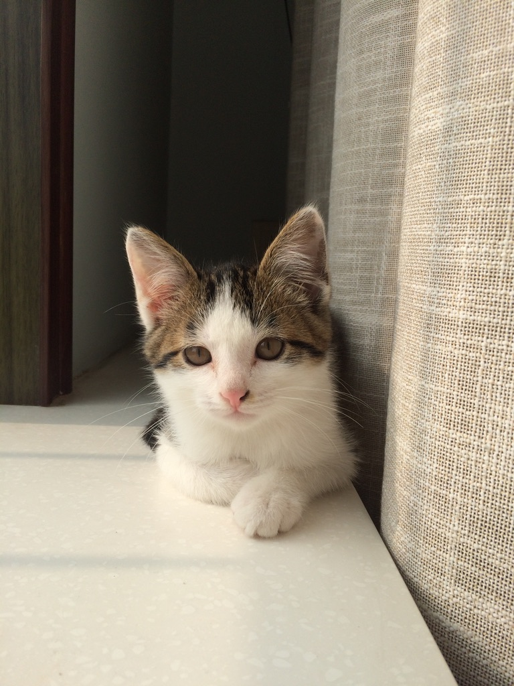
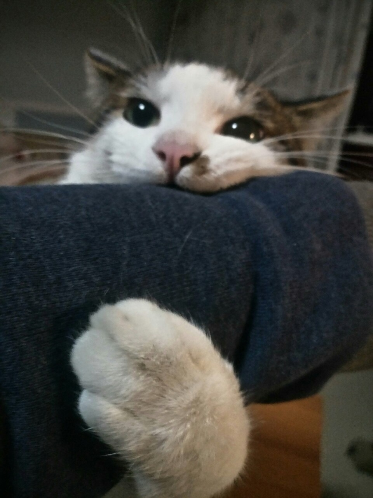
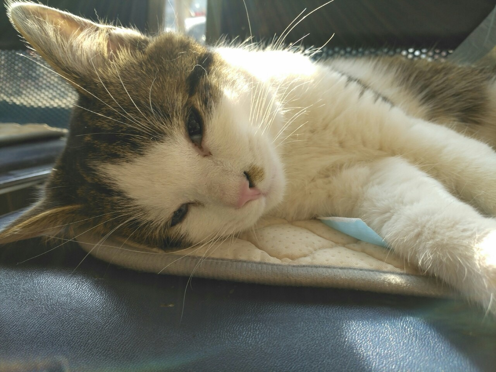

2016 年 7 月毕业后保研，放弃后全力准备出国。
目前人在多伦多大学读研，MEng。方向为数据分析 & 机器学习，2020 年毕业。
标准的吃货，严重的 ADHD 患者。

养过一只中华田园猫，叫旺旺。大名起了没叫过，叫毛血旺。



旺旺是我在国内家里的楼下买的，是个菜市场里面卖小动物的摊位。
当时是人生比较难熬的一段时间，16 年 7 月本科毕业之后，当时的女朋友去了多伦多大学，我回到了家里申请学校。
每天夜里两点的时候，那个摊位总会有嗷嗷的猫叫声，是摊主过来收摊。
突然有一天，想下去看看那个摊位，结果把旺旺买了，4 个月大，50 块。
之后夜里两点再也没有猫叫声。
没想到跟我居然同一天生日。
旺旺带给我的简单的快乐，让我坚持到了来 offer 的那天，然后我也去了多伦多大学。
这是我花的最值的 50 块。
后来因为长期不在国内的原因，加上妈妈不是很喜欢，旺旺送给了叔叔的一个朋友。
之后要过旺旺的视频，看得出来是个喜欢动物的家庭，旺旺也很开心。
有些缘分可能就到这里吧。
叫 Andrew，是我领养的，和我前老板的前老板一个名字。
前老板还过问过，问什么叫 Andrew，没办法，他亲妈起的，不是我。
Andrew 刚来到家的时候浑身肌肉，长得又黑，像个人。
叫荔枝，领养的，多好听的名字，是个女孩子的名字。
北方人，本科在北邮，是我最快乐最怀念的四年。
2016 年 7 月毕业后保研，放弃后全力准备出国。
目前人在多伦多大学读研，MEng。方向为数据分析 & 机器学习，2020 年毕业。
标准的吃货，严重的 ADHD 患者。